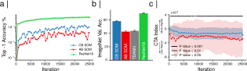
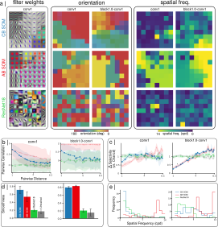
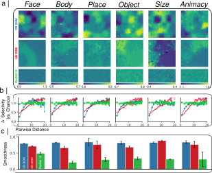
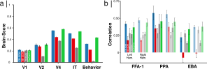

Figure 1: Credit-based BMU selection aligns topographical and recognition updates. a) ImageNet validation top-1 accuracy during the first few epochs of training for CB-SOM, AB-SOM and ResNet18 models; b) ImageNet validation top-1 accuracy for alternative models; c) Misalignment between task loss and topographical learning loss (refer to methods) for two models, CB-SOM and AB-SOM, color-coded in blue and red, respectively. Higher numbers indicate greater alignment. The black bar indicates the significance level of the difference in mean between AB-SOM and CB-SOM category-task alignment (CTA) indices at each step.

Figure 2: V1-like organization in early model layers. a) (left) Visualization of the weight parameters in the first layer of each model. Filters in each layer are arranged on a 2D simulated cortical sheet (here 8x8). Orientation (middle) and spatial frequency (right) selectivity is color coded for each filter in two model layers (conv1 and Block.1.0.conv1) for CB-SOM ,ABSOM and ResNet-18. b) Pairwise correlations for alternative models as a function of distance on the 2D map; c) Change in selectivity as a function of distance on the 2D map, plotted for alternative models and two layers. d) Smoothness score for the orientation and of two layers. e) The distribution of the spatial frequency selectivity in each layer and each model.

Figure 3: Category-selective clusters in deep CB-SOM layers. a) Category-Selective maps for each object category from the fLoc dataset (i.e., Face, Body, Place, and Object), including selectivity for size and animacy. Maps are derived by computing the d-prime value between the target versus other categories; b) Pairwise differences in selectivity as a function of distance on the 2D map, analyzed for category selectivity across three models: CB-SOM, AB-SOM, and ResNet-18. c) Smoothness measure evaluates the continuity of transition in selectivity within each category-selectivity map and across spatial dimensions of the 2D map. CB-SOM selectivity maps are significantly smoother than both the non-topographical ResNet-18 and the AB-SOM model.

Figure 4: Representational similarity between models and primates. a) Assessing representations similarity between models and macaque visual cortex using the BrainScore platform (Schrimpf et al., 2018). b) Pearson correlation between best-matching patch in each model and the corresponding cortical patches of Fusiform face area (FFA-1), Parahippocampal place area (PPA), and extrastriate body area (EBA) in each hemisphere using the NSD dataset (Allen et al., 2022). ResNet-18 model was mapped onto each area using cross-validated ridge regression. Mean Pearson correlation is reported for each brain region and error bars indicate the standard deviation across subjects.

Figure 5: Most exciting images for the IT layer in each model. a) For each filter in CB-SOM model, the image with highest elicited activation from the ImageNet validation set is plotted on a grid that matches the arrangement of model filters on the 2D simulated cortical sheet. b) similar to a) but for AB-SOM model.